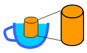

SimpleORM
Simple Java Object
Relational Mapping |

Power without complexity. |
Simple adj. 1.
Easy to understand, deal
with, use etc. 2. not elaborate or
artificial. 3.
unaffected, unassuming. 4. not
complex or
complicated. [Macquarie Dictionary].
New! SimpleORM 3.0 released with the new DataSet architecture
Overview
SimpleORM is a full featured Java object relational mapping system that avoids
exotic technologies such as byte code generation.
SimpleWebApp is
a
framework that can use SimpleORM to implement Java web applications
very easily. Simple applications should not be complex to
implement.
SimpleORM/Web's extensive use of meta data also enables applications to
be deeply customized by external jars. This enables more
complex
applications to be delivered as core services and separate but deeply
integrated plug in modules.
Both are open source projects
(Apache style license).
SimpleORM Version 3.*
SimpleORM provides similar functionality to Hibernate
by
mapping data in a relational database to Java objects in
memory.
Queries can be specified in terms of Java objects, object
identity is aligned with database keys, relationships between objects
are maintained and modified objects are automatically flushed to the
database with optimistic locks.
But
unlike Hibernate, SimpleORM uses a very simple
object structure and architecture that avoids the need for complex
parsing, byte code processing etc. SimpleORM is small and
transparent, packaged in two jars of just 79K and 52K in size, with
only one small and optional dependency (Slf4j). (Hibernate is
over 2400K plus about 2000K of dependent Jars.) This makes
SimpleORM easy to understand and so greatly reduces technical risk.
SimpleORM version 3.* is a major upgrade that provides a distinct
DataSet component while simplifying record definitions.
See the SimpleORM White
Paper for
a full description of how SimpleORM works.
SimpleServlets
A very simple environment for running web applications as servlets. No JSPs, no XML at all.
The
servlet package creates a "requestlet" object for each invocation,
which then conveniently stores the request and response objects etc.
Widgets then provide some simple wrappers around HTML which makes
it neater to use.
So BW._td() just outputs "</td>" (and check that it matches a <td>). State is stored via "paramattrs", which is a simple wrapper around request.getParameter and
request.get|setAttribute
(attributes override parameters). For easy development it is set
up to be invoked as an ordinary Java application that listens on
Port 8080 (using Jetty), although the standard servlets are also easy to package into a war.
The whole jar is about 30K.
(SimpleWebApp)
SimpleWebApp lets you quickly develop high quality web
applications.
It provides reusable templates that encapsulate standard user
interaction
patterns that
list, view and update data (CRUD). SimpleWebApp also cuts
through
the layers to integrate interfaces with databases. This means
that the only code you need to write is real application logic rather
than large quantities of repetitive glue code. And the code
you
do write is plain old Java code with minimal reflection etc. because
developing web application
should be ... simple.
SimpleWebApp
is more sophisticated than SimpleServlets. However, simplewebap
uses JSP technologies to render the templates. This can be rather
painful if the templates need to be modified. See SimpleWebApp
for a
comprehensive overview.
Mailing Lists
Download
Download SimpleORM sources.
Contributions
All inquiries, suggestions or offers of assistance most
welcome.
Contactinfo@SimpleORM.org
.
Many programmers are clever enough to write clever code, a few programmers are clever enough not to.
No
XML, no reflection, no annotations. It's simply typesafe java code.
It's easy to use. Because it is open source and the amount of
source code is rather small, there will be always somebody who will
maintain the software. The dataset component is independent
from the jdbc-component. -- Thomas Leichner

Additional Keywords: hibernate Java Simple ORM O/R mapping map
mapper JDO JPA